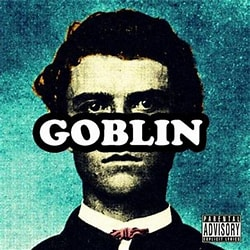

Goblin
Tyler the Creator
Label: XL Recordings
Released: May 10, 2011
Country: US
Style: Hip Hop, Funk/ soul
Tracklist:
1 Goblin 6:492 Yonkers 4:09
3 Radicals 7:18
4 She 4:13
5 Translyvania 3:12
6 Nightmare 5:22
7 Tron Cat 4:14
8 Her 3:31
9 Sandwitches 4:51
10 Fish / Boppin Bitch 6:20
11 Analog 2:54
12 Bitch Suck Dick 3:36
13 Window 8:00
14 Au79 3:40
15 Golden 5:43